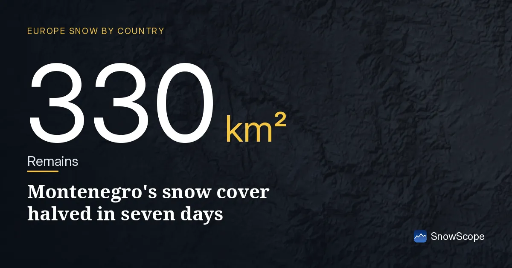
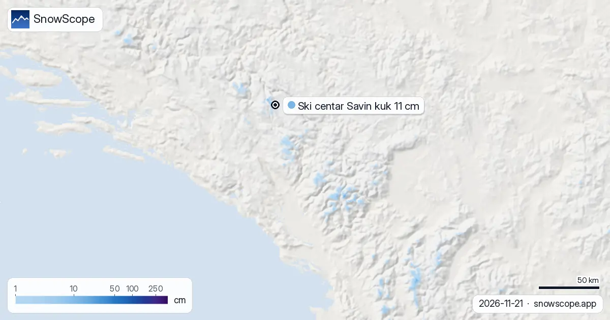
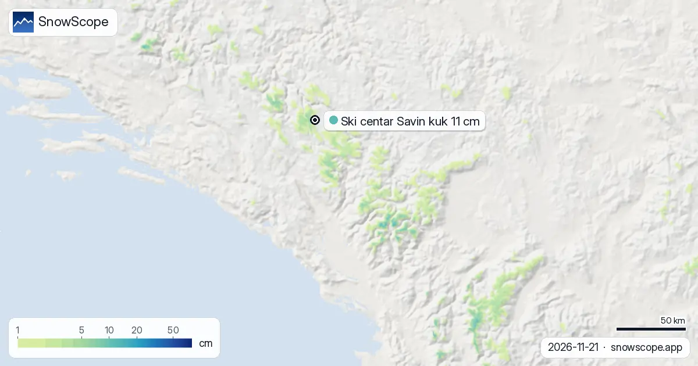

Montenegro's snow cover halved in seven days: 330 km² remains
Montenegro has lost three-quarters of its snow cover in the past week, dropping from 3,570 km² to just 330 km² today. The retreat is sharp and widespread, though high-altitude terrain above 2,000 m—especially in the Prokletije, Durmitor and Bjelasica ranges—still holds measurable snow ahead of a forecast thaw-then-freeze cycle.
See the live snow forecast for Ski centar Savin kuk in the SnowScope appSnow depth, powder alerts and the 3D map, free.
A week of rapid loss
The satellite record over the past seven days tells a story of retreat. Last weekend, snow blanketed 3,570 km² of Montenegro. Today, that figure stands at 330 km². The scale of loss—3,240 km²—reflects a combination of seasonal decay, orographic melt from mild temperatures, and the absence of fresh precipitation until yesterday.
The trend chart shows the drama clearly. Between 16 and 19 November, snow cover oscillated between 10 and 80 km², a sign of melting and loss of marginal patches. Only when fresh snow arrived on 20 November did the total climb back to 330 km². The recovery is real but modest, and much smaller than the starting line of a week ago.
| Day | White area | Most new snow in 3 days | Deepest resort |
|---|---|---|---|
| Monday 16 November | 80 km² | 4 cm | Ski centar Savin kuk |
| Tuesday 17 November | 20 km² | 0 cm | Ski centar Savin kuk |
| Wednesday 18 November | 20 km² | 0 cm | Ski centar Savin kuk |
| Thursday 19 November | 10 km² | 0 cm | Ski centar Savin kuk |
| Friday 20 November | 390 km² | 2 cm | Ski centar Savin kuk |
| Saturday 21 November | 330 km² | 5 cm | Ski centar Savin kuk |

Where snow survives
Snow now clings only to the highest peaks. Across the country, our model shows just 3 per cent of Montenegro is snow-covered today. The snow line sits at 2,000 m. Below that altitude, the landscape is bare; above it, the story changes.
In the band from 2,000 to 2,500 m, mean depth is 2 cm and 58 per cent of terrain holds some snow. Higher still, the peaks of the Prokletije received 9 cm of new snow in the past three days, while Durmitor and Bjelasica each accumulated 8 cm. These mountains act as cold-air refuges, capturing orographic precipitation as moist air rises and chills.

Ski centar Savin kuk stands alone
Among Montenegro's three ski areas, only one has measurable snow today. Ski centar Savin kuk, set at 2,175 m, reports 11 cm depth and 7 cm of fresh snow from the past 72 hours. The resort sits high enough to remain in the accumulation zone, and its elevation has insulated it from the worst of the melt.
The outlook for the resort is paradoxical. The next three days will bring up to 21 cm of new snow, with the heaviest fall expected on 23 November (10 cm forecast). But this fresh snow will fall onto a thin base. Early-season snow is fragile; rocks and rough ground beneath thin coverage create hazards for skiers.
The regional picture
Neighbouring countries show a similar pattern. Bosnia and Herzegovina has no snow cover today and forecasts only 18 cm in the next seven days. Albania, by contrast, sits at 4 per cent coverage with 34 cm expected over the same period, suggesting higher mountains and different precipitation patterns are favouring its peaks.
Montenegro lies between these two regimes, with its own complex terrain creating pockets of persistence and zones of rapid loss. The ranges that run north-south—the Prokletije on the border with Albania, and the central highlands—catch wind-borne snow and hold cold air longer than the lower, more exposed terrain to the west.
What comes next
The next week is split into two acts. Days one through three will see accumulation; 11 cm is forecast as a peak across the country, with the heaviest on 23 November. This fresh snow will rebuild coverage on high terrain and feed Savin kuk's base. But the second week—from 29 November onward—shows only 13 cm in total, suggesting a return to milder, drier conditions.
The first week of December marks the transition. If the high-altitude snow survives the interim thaw, early December may bring another chance to build a sustainable base. For now, skiers planning to visit should check the official avalanche bulletin before heading off-piste, as rapid snow-on-ground transitions create instability.
Data and uncertainty
These figures are based on satellite imagery and our snow model for 11,370 km² of Montenegrin terrain, as of 21 November. The model estimates snow depth and coverage across the region; ground truth at Ski centar Savin kuk (11 cm today) confirms the satellite signal in that zone. Early-season estimates carry inherent uncertainty: shallow snow masks rock and vegetation beneath, and transition zones between snow and bare ground are hard to pinpoint precisely from space.
Tips for skiers
- Check the official avalanche bulletin before any off-piste skiing, especially on steep terrain above 2,000 m where fresh snow will land on thin base and may slide on rock.
- Ski centar Savin kuk at 2,175 m will receive the most benefit from the forecast snow; lower resorts risk patchy coverage until early December.
- Expect variable conditions on 23 November—the peak snowfall day. Snow will be heaviest on exposed high ground; sheltered gullies may accumulate faster.
- Plan trips for mid to late December if possible; early season snow is thinner and more reactive than mid-winter accumulation.
- Monitor the app for updates on 29 November onward, when the forecast transitions to lighter snow and milder air; this will determine whether a skiable base persists into December.
About these numbers
Resort snow depths are the deepest snow on the resort's upper slopes from the SnowScope snow model (about 1 km, run of 21 November); they are estimates for an area, not a measurement at one point. Station values are measurements on the date shown. Forecasts can change. Always read the official avalanche bulletin before going off-piste.
Cite this report
For research, teaching or the press: the numbers and charts are free to reuse under CC BY 4.0 with this citation.
SnowScope (2026), Montenegro's snow cover halved in seven days: 330 km² remains, https://snowscope.app/blog/en/2026/11/montenegro-snow-cover-loss-this-week-21-november-2026.html, accessed 2026-11-21
SnowScope (Atlas Labs). (2026, November 21). Montenegro's snow cover halved in seven days: 330 km² remains. SnowScope snow reports. https://snowscope.app/blog/en/2026/11/montenegro-snow-cover-loss-this-week-21-november-2026.html
BibTeX
@misc{snowscope2026montenegrosnowcoverlosst,
author = {{SnowScope (Atlas Labs)}},
title = {Montenegro's snow cover halved in seven days: 330 km² remains},
year = {2026},
month = nov,
howpublished = {\url{https://snowscope.app/blog/en/2026/11/montenegro-snow-cover-loss-this-week-21-november-2026.html}},
note = {Published 2026-11-21 13:13 UTC; accessed 2026-11-21}
}· CC BY 4.0 · Methods, data and tools →
Ski centar Savin kuk: snow and temperature by height, this winter vs last (tools) →
Follow Ski centar Savin kuk
Free: a message when fresh snow is coming, and the forecast every morning.
More snow reports

Up to 30 cm of snow fell on northern Velebit and Bjelolasica on Friday 13 November 2026. By Tuesday it was gone. Day by day, what the mountains kept, and when snow comes back.

Only Borovets and Bansko have a trace of snow at the top today, 2 cm each. A week ago Borovets had 11 cm. Day by day, and the one snowy day in the forecast.

Pick a region, dates, budget and what matters; get every resort ranked with the likely snow at the start, the pass, hotel and food per person, chalets to book, and a game mode.